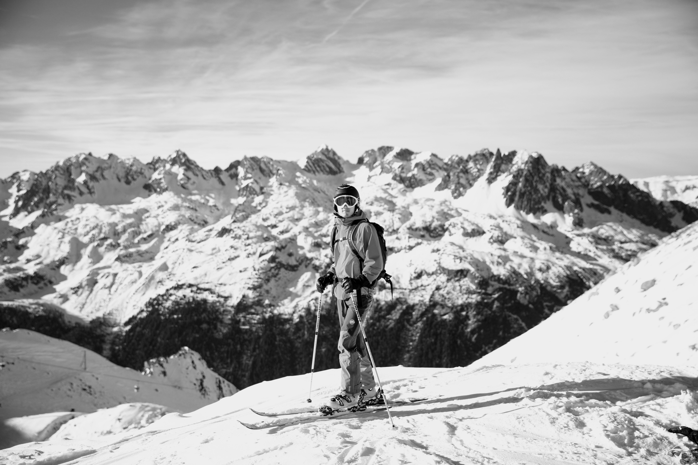
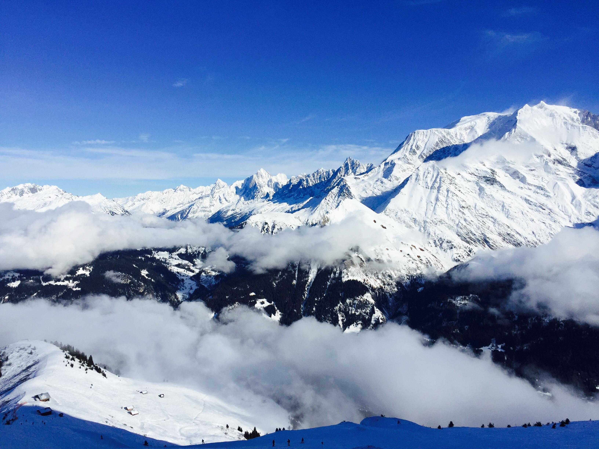
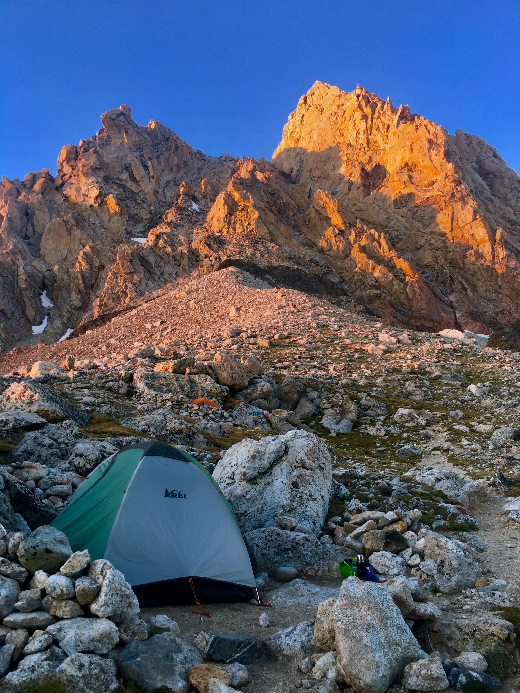
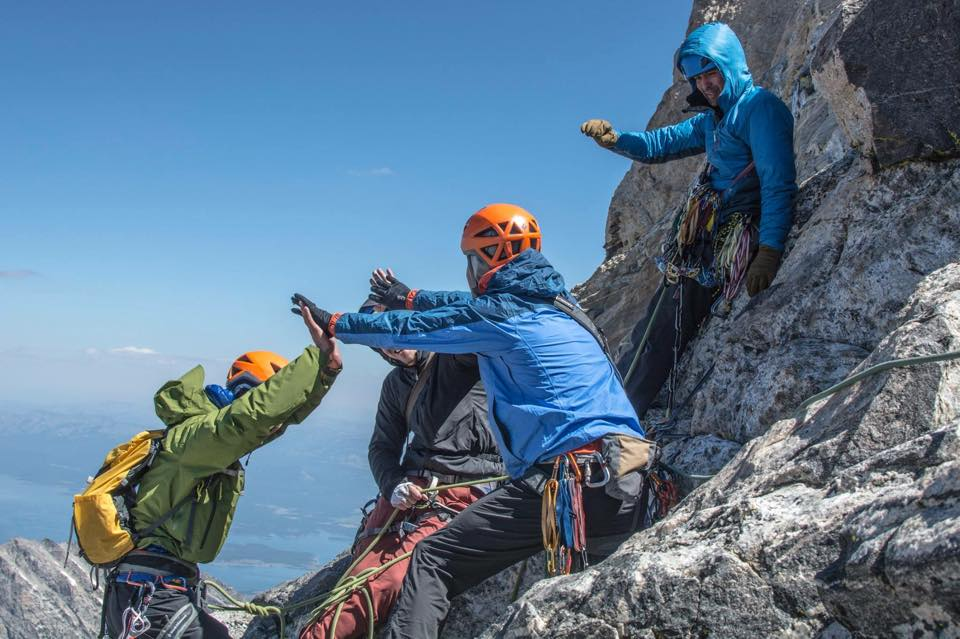
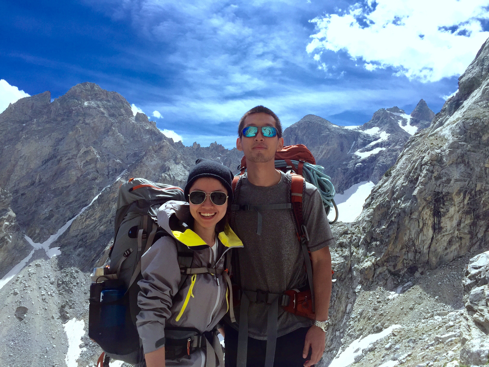
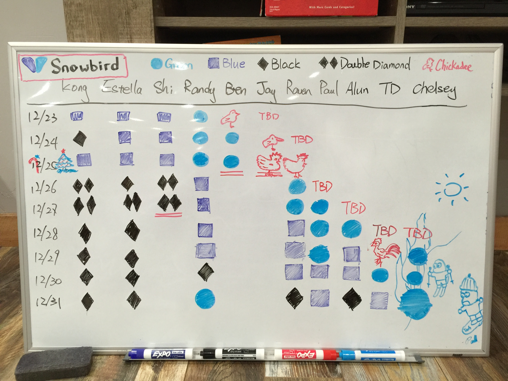
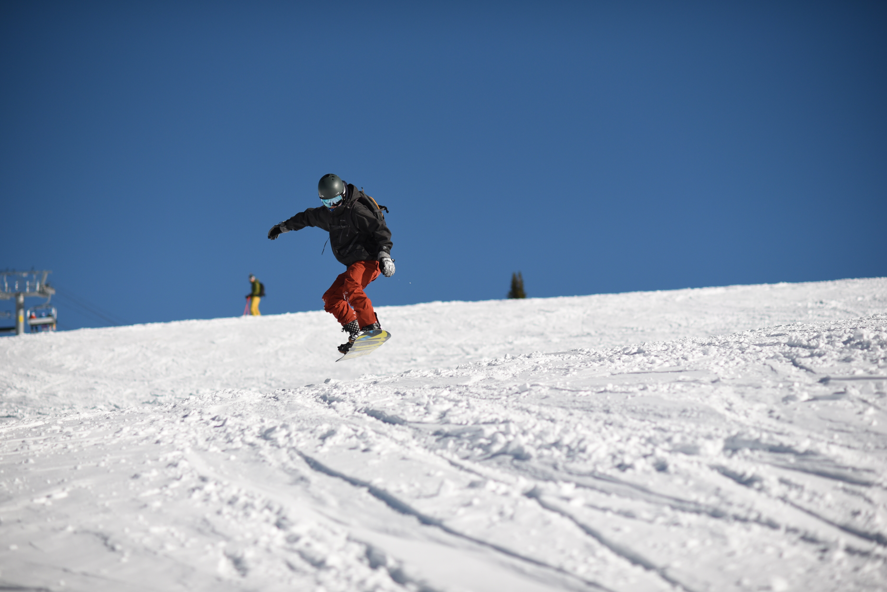

At the beginning
Kong pointed out many times when he told the story of getting started.
"I myself learned rock climbing and skiing when I lived in Switzerland, one of the best places on the planet for alpine sports"
A few early trips were skiing in Zermatt, Chamonix, and Val Thorens. Those ski resorts are so big! In fact, they are among the biggest resorts in the world. It's funny that we didn't have a proper car, not a SUV or van; we only had a Fiat 500, which is one of the smallest cars one can get. We packed 2-3 days of luggage, we got some cheap magnetic ski rack put on the top of the car. A total of five people in that tiny car with ski poles and boots holding on their lap sounds just about right when going skiing. Nothing matters as long as we get to the mountain and make a few perfect turns on the slope.
The French ski-to-door was literally ski to door. You rented out a chalet or apartment by the slope, and the skis are stored in the basement. In the morning, you wake up by the French croissant and Italian expresso, and then you get dressed for the skiing. As soon as you get out of the basement, which connects to the outside, you can put your ski down and start skiing to the lift! No walking for even a single step! Hundreds of years of history in skiing makes this country a perfect place for your adventure.
 ~ 3000 meters up in the French alps. - ChamonixWhen we took the telecabin (gondola) all the way up to ~ 3000 meters at the glacier, the Matterhorn stands right next to you. In a perfect day, one can see miles away to Italy, to France, and of course Switzerland. The slope is wide and long, and you basically can do whatever you want and there is so much space that everyone enjoys the mountain in their own way.
On the side-country, just next to the piste, one can enjoy the fresh powder in the backside of the mountain, where snow stays as snow for the entire year, even in the summer. In Zarmatt, one can ski in the summer on these glaciers. At lunch, one can try a French burger at the restaurant at 3000 meters looking at the giant glacier, enjoying the moment that nature offers.
 ~ Alps - Swiss and French AlpsBack then, we were still graduate students and most of us studied experimental particle and nuclear physics at CERN, an international organization for experimental physics. Kong taught everyone how to ski, and only after the second day, they fell in love with the sport. Later in the season, they started to get their own skis, joined the ski club at CERN, and later even started to organize trips and show more people how much fun skiing bring to them. In the evening, dinning in a Swiss chalet and talking for hours about their plans after graduations, their stories about growing up, and sharing their experience about their research work. This built a bound among them, a bound that built on shared adventures.
The Rockies
The Rocky mountain spans thousands of miles in the North America, starting from Mexico up to Canada. The rockies is one of the most iconic places for this entire continent. In the summer, there are thousands of miles of trails people can hike, more than 50 Fourteeners (peaks above 14,000 feet high) one can climb, and hundreds of ski resorts and unlimited backcountry one can ski.
 ~ 30+ hours of driving without stopping to just see the big boobs ("Grand Teton" was named by a French explorer)
~ 30+ hours of driving without stopping to just see the big boobs ("Grand Teton" was named by a French explorer)
One time we drove 30 hours straight to the Yellowstone National Park and the Grand Teton National Park for climbing, backpacking, and for a very special event: watching the solar eclipse! We did a climb/hike to the Lower Saddle, the base camp for climbing the Grand (the Grand Teton), and Kong made it to the submit the next morning with a group of veterans.
 Yellowstone, Wyoming
Yellowstone, Wyoming
The climb/hike up to the Lower Saddle was underestimated by Kong, while Daniel and Raven were the first time backpacking in the mountain. The view was absolute fantastic, but it was harsh for a first-time backpacker :-). Because up on the Tetons above tree line, e.g., the Lower Saddle campsite, there is no waste disposal of any kind. The morning we got up at 4 o'clock to obtain the backcountry permit, the ranger station provided each of us a disposal bag, so-called the "shit bag". When the ranger handed us those bags, Raven did exactly what she would do before Kong could stop her - asking for two bags! She added, "I probably need a lot..." As later happened, it turned out that Kong needed two bags because of the high altitude dry food before he departed for the submit! Using the bag to take a drop isn't the best experience, but doing it while watching the sun rise above 11,000 feet over the entire state of Idaho is definitely one of the best!
 Lower Saddle climber's camp, Grand Teton N.P.Later Kong met a few climbers from Veteran Expedition and they took him along. It was about 2-3 hours of class 4 climbing, which doesn't need technical protection, to the Upper Saddle. After that it was a long wait before their turn to setup the belay in order to finish the last 3 pitches of traditional climb ~ 5.7. There were still spots that were icy and there were a few scary moments when Kong slipped off the rock, caught by the belayer. Finally at the submit, nothing can beat that feeling! The total time for Kong that day was about ~ 18 hours nonstop of climbing and hiking. It wasn't until 10pm he finally made it back to the parking lot after hiking in the dark for 2 hours.
 Traditional climb on the Grand ~ Kong made it to the second pitch.Going back to the Tetons has always been on our list for both summer and winter trips
"If you ask me where is your favorite place in the lower 48 states in the US, I would tell you the Grand Teton National Park without a second of hesitation" Backpacking in the Grand Teton N.P
Skiing in Utah
The first official Kong's Academy ski trip was in 2017 Christmas at Snowbird, UT. A total of 12 persons coming in and out Salt Lake city over the entire week of Christmas and New Year. We rented out an Airbnb about ~30 minutes of driving to Snowbird. Ben brought a whiteboard with him, and we used it to record everyone's progress. Almost nobody really knows how to ski so Kong had to show them the basics from the easiest slope, "chickadee". We were surprised by how fast their body remember how to balance and learn how to turn even when they weren't able to describe how they just did it.
 The second group of the week when we had 8 persons on New Year's eve skiing at Snowbird.
The second group of the week when we had 8 persons on New Year's eve skiing at Snowbird.
Some people learned how to ski in just 1 day, and most people can ski a blue slope in just 3 days. Those blues at Snowbird are not those easy blue, where some runs are really steep and icy in the early season. Jay was the one who had a hard time for his first day, and he only stayed for 2 days because he missed his original flight to SLC. Later one will learn, he did a successful and smooth black diamond in his second season in Colorado 2018. In total there was only a week of skiing for him overall. However, this is not the point; it is not about how difficult one can ski in a resort, since there are tons of people who can learn how to ski a black diamond for the first day or who learn how to ski even before they know how to walk! It is about how to get out of the comfort zone, to accept new challenges, and most importantly to have fun with those new challenges. Also, going through these experiences with some old and new friends together, is a fantastic experience on its own.
 Keeping everyone's progress. One has to ski down a slope/run (the most difficult one chooses) from top to bottom without a single fall would count as its "color" of the day.Sharing makes skiing even more fun. Kong could've gone skiing by himself for the entire time, but he stayed with everyone and shared the experience with them. This experience itself was a lesson to Kong and to everyone else.
 Kong and Estella at Snowbird.
Kong and Estella at Snowbird.
Skiing in Colorado
New year's eve, the last day of 2017 at Snowbird UT, we didn't feel like leaving the mountain. People were gradually skiing back to the base area and found out we were still waiting for others to come back, they would say, "Let me go for another run real quick". We wouldn't be able to get everyone ready until 20 mins after the lift literally stopped and we saw a few people running down and enjoying their last run on the empty slope. They told Kong, "we want to come back!"
Half way through the night, we were half drunk half sober, doing hotpot and drinking game. All of a sudden, Kong proposed without any context "how about let's do it again next year? or how about doing it every Christmas and New Year as our annual party?" Everyone was like "yeah sure of course" but nothing else was talked about. More than half a year later, Kong formed a Facebook group and asked if anybody is interested going skiing again the coming Christmas. It turned out in 2018 Christmas, we had even more people than the previous year at Snowbird and except for one new member, everyone who was learning how to ski at Snowbird the year before could comfortably ski down a real black diamond, including Jay!
 Everyone at Keystone Colorado, with the perfect weather.
Everyone at Keystone Colorado, with the perfect weather.
For Kong, that was one of the best moments in his life. People actually got out of their comfort zone, started to enjoy a new way of interacting with the nature, and most importantly, they had a lot of fun with their friends and built a strong relationship.
This was the second Kong's Academy ski trip, and instead of skiing one resort, most of us committed a EPIC pass so we skied Keystone, A-basin, Vail, and Breckenridge. We had our first two days at Vail with a lot of powder, and we particularly liked the Legendary back bowl. Without the trees and with a lot of snow, one can just go anywhere without worrying about which trail to take.
 Randy doing a jump at Vail.The planning of the trip was done usually right after the summer, when the prices of the Airbnb and flights are still reasonable. The New York crew drove for about 30 hours to Colorado, Bay area people drove about 20 hours. People from Texas generally fly to Denver and rent an all-wheel pickup truck for the mountain weather. Kong and others usually get to the mountain first and take care of things that are usually needed for beginners, e.g., finding the place for rental, sometimes a group lesson for the first half-day, and so on. Also after the skiing, they would usually go for grocery shopping and prepare the dinner. It's a very special time in a year that people are not so addicted to their laptops and phones (some still do) and they do something together in the house in the evening.
"We highly recommend you to simply give it a try, especially with a well-organized trip and friends you like to hang out with. The first impression is important, and we know exactly how to make it perfect for your first experience." - Kong's Academy